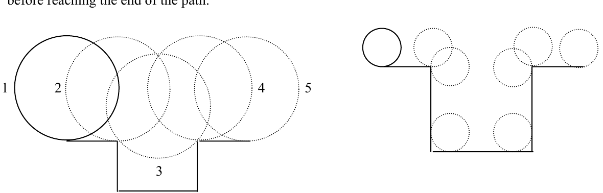

2002 ACM Programming Contest World Finals · Problem I
One method used to measure the length of a path is to roll a wheel (similar to a bicycle wheel) along the path. If we know the radius of the wheel and the number of revolutions it makes as it travels along the path, the length of the path can be computed.
This method works well if the path is smooth. But when there are curbs or other abrupt elevation changes in the path, the path distance may not be accurately determined, because the wheel may rotate around a point (like the edge of a curb), or the wheel may roll along a vertical surface. In this problem you are to determine the distance moved by the center of such a wheel as it travels along a path that includes only horizontal and vertical surfaces.
To measure a path, the wheel is placed with its center directly above the origin of the path. The wheel is then moved forward over the path as far as possible, always remaining in contact with the surface, ending with its center directly above the end of the path.
Consider the path shown in the illustration on the left below, and assume the wheel has a radius of 2. The path begins and ends with horizontal segments of length 2 at the same elevation. Between these there is a horizontal segment of length 2.828427 at 2 units below the elevation of the other two horizontal segments. To measure this path, the wheel is placed at position 1. It then moves horizontally to position 2, rotates 45 degrees to position 3, rotates another 45 degrees to position 4, and finally rolls horizontally to position 5. The center of the wheel moved a distance of 7.1416, not 6.8284.
In the illustration on the right below, the path begins and ends with horizontal segments of length 3, separated by a 7-unit wide region placed 7 units below the surface. If the wheel has a radius of 1, then it will move 26.142 units before reaching the end of the path.

For this problem there are multiple input cases. Each case begins with a positive real number specifying the radius of the wheel and an integer n, which is at least 1 but not greater than 50. There then follow n pairs of real numbers. The first number in each pair gives the horizontal distance along the path to the next vertical surface. The second number in each pair gives the signed change in the elevation of the path at the vertical surface, with positive numbers representing an increase in elevation. The vertical surfaces are always perpendicular to the horizontal surfaces. The elevation change in the nth pair will always be 0.
The input is terminated by a pair of zeroes.
For each case, display the case number and the distance moved by the center of the wheel with 3 digits to the right of the decimal point.
Place a blank line after the output of each test case
2.0 3 2.0 -2.0 2.828427 2.0 2.0 0.0 1.0 3 3.0 -7.0 7.0 7.0 3.0 0.0 1.0 3 1.0 –4.0 2.0 4.0 1.0 0.0 0 0
Case 1: Distance = 7.142 Case 2: Distance = 26.142 Case 3: Distance = 5.142